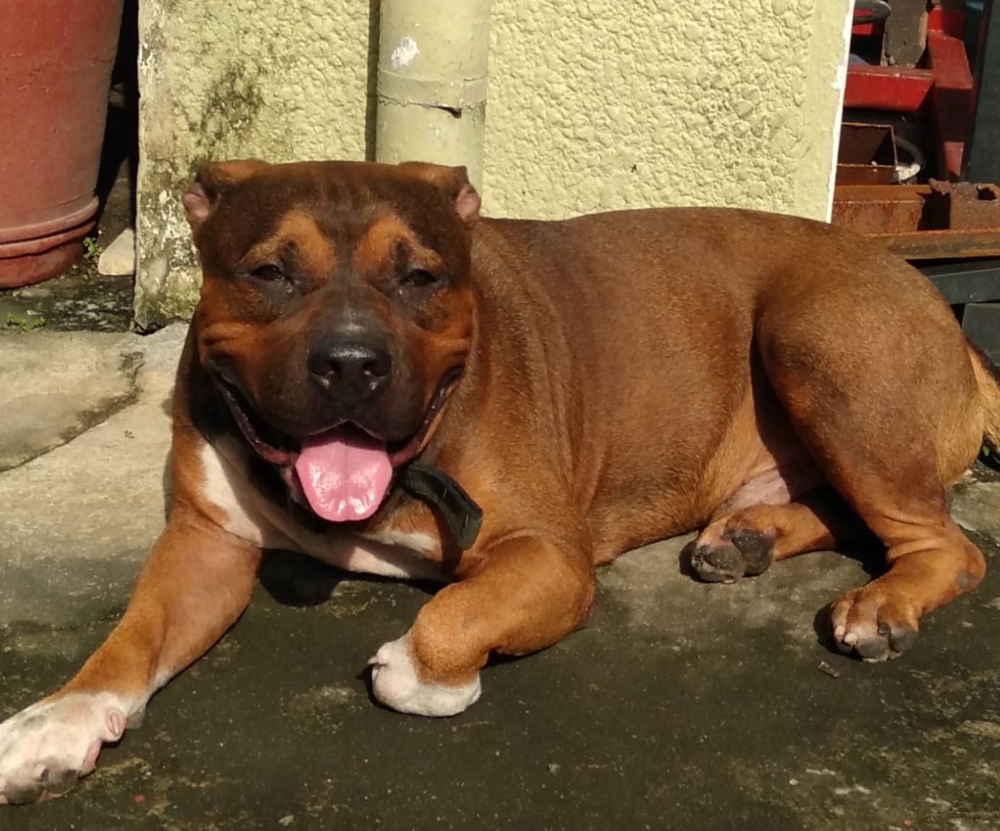

My favorite breeds
|  |
Bruno is my American Bully dog. The American Bully is a contemporary dog breed that was created as a companion animal and was first standardized and acknowledged as a breed in 2004 by the American Bully Kennel Club. |
 |
Shih Tzus are famous for their short snouts and enormous wide eyes, as well as their ever growing coat, floppy ears, and short and stout posture. Despite being small, they are recognized for their calm disposition, sense of humor, and friendliness. |
 |
The breed has a compact, square body with robust, well-developed muscles all over the body and a fine, glossy coat that occurs in a range of hues, most frequently light brown (fawn) or black. |
:max_bytes(150000):strip_icc()/names-for-german-shepherds-4797840-hero-ed34431ad20c42c6894b4a29765b4d68.jpg) |
The German Shepherd Dog is a huge, agile, muscular dog with noble spirit and excellent intelligence. It is generally regarded as the best all-purpose worker in the canine family. The German Shepherd is definitely a dog lover's ideal dog because of its loyalty, assurance, bravery, and steadiness. The form of a German Shepherd Dog, which can reach a height of 26 inches at the shoulder, shows smooth, beautiful curves rather than sharp corners. |
 |
Poodles are frequently pictured wearing the extravagant European clip at dog contests. The Sporting clip, in which the coat is trimmed to match the form of the squarely built, smoothly muscled body, is preferred by the majority of pet owners. Forget any preconceived beliefs you may have about pups; these are eager, athletic, wickedly intelligent canines with amazing versatility. |